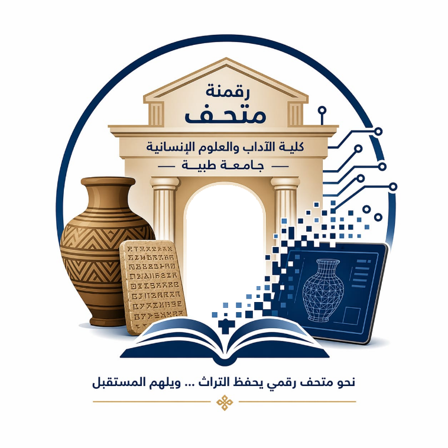

اختر قطعة من القائمة لعرض التفاصيل.

متحف كلية الادآب والعلوم الانسانية
ابحث عن القطعة، ثم افتح تفاصيلها مع الصورة والرابط وكود QR.

ابحث عن القطعة، ثم افتح تفاصيلها مع الصورة والرابط وكود QR.
اختر قطعة من القائمة لعرض التفاصيل.